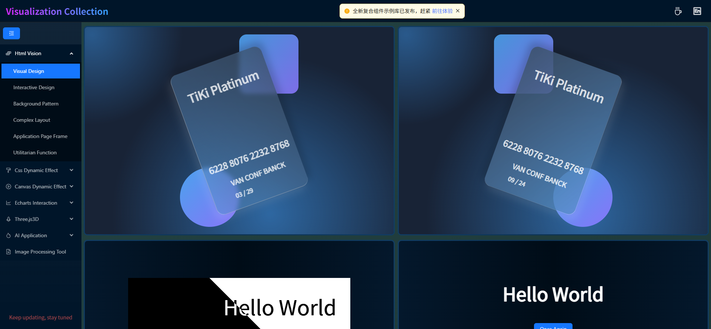
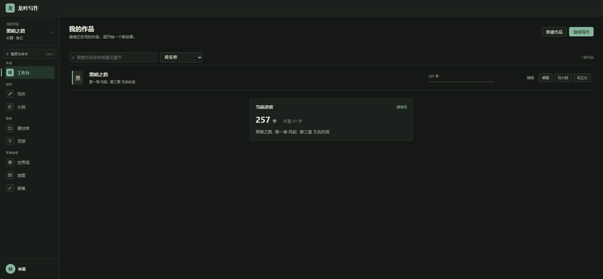
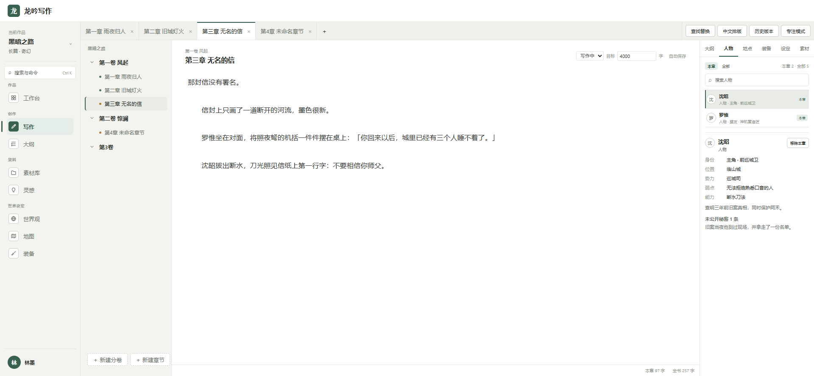

01 / ONE HERO
一屏一个主角
工作台的主角是正在写的书，写作页的主角是稿纸。其余导航、统计、工具主动退后，不和内容抢注意力。
对 visualization-collection 的视觉机制拆解，以及龙吟写作从“功能完整的工具”升级为“有作者气质的写作空间”的完整方案。目标不是更花哨，而是更有层级、更有记忆点、更让人想继续写下去。
龙吟现在的信息架构、数据模型和写作闭环已经稳定。真正让界面显得“枯燥”的，是页面没有主次、所有表面同质、字体缺少文学气质、交互只发生在按钮上，以及最有价值的写作内容没有被当成舞台中心。
工作台的主角是正在写的书，写作页的主角是稿纸。其余导航、统计、工具主动退后，不和内容抢注意力。
用“深色应用外壳 + 暖白纸面”建立稳定对比。深色不是科技感，而是书房、灯下、安静的写作环境。
翻页、展开、完成盖章、选中滑动。每次动效都对应一个真实动作，不用粒子、光效和循环动画填满屏幕。
保留现有墨绿与纸张基因，把产品做成一位作者的桌面：书封有重量，稿纸有光，关系图像星图，地图像羊皮纸图谱。整体安静，但每个关键动作都有质感。
这是一个视觉效果展示站，不是写作产品。它能给龙吟的启发是视觉编排方式：暗场衬底、发光材质、响应式空间、以及带物理感的切换。

项目用深墨蓝渐变、极淡网格与局部发光托起内容；背景不抢字，但让卡片看起来像被灯照着。
卡片有厚度、边缘高光、玻璃叠层和阴影。用户感觉是在看物件，而不是看表格行。
滑动 Tab 用 CSS 变量移动凹槽，并让容器短暂旋转；动作有起点、经过、落点，像真实机械。
鼠标经过时，光斑位置、卡片倾斜和层叠关系变化。界面不再是被动等待点击的静态页面。
翻书例子使用 3D `rotateY`、正反页和层级重建，让“翻书”成为一个可感知的空间动作。
标题使用 Source Han 系列字重与渐变、宽字距导航，优先建立记忆点，而不是把信息塞满。
| 机制 | 参考项目里的做法 | 龙吟怎么用 | 边界 |
|---|---|---|---|
| 暗场与光源 | 深色主场、明显的光斑与发光卡片 | 深墨书壳 + 暖纸稿面 + 工作台局部光池 | 正文区域不做发光；文字对比优先 |
| 物理切换 | 滑动槽 + 容器旋转 + 弹性曲线 | 章节/页签切换使用滑动墨条，旋转控制在 ±1° | 只用于导航与书封，不用于表单 |
| 指针响应 | 光斑遮罩、卡片倾斜、层叠后撤 | 仅书封、灵感纸条、世界图谱节点响应 | 最大倾斜 2.5°，关闭减少动态模式 |
| 物件叙事 | 翻书、堆叠卡片、玻璃卡 | 书封、卷宗、图纸、档案卡；每个模块有自己的物件语言 | 功能密度不下降，列表仍可快速扫描 |
| 标题人格 | 超大标题 + 定制字体 | 衬线标题承载书名与章节，界面正文继续用无衬线 | 不把 UI 标签做成艺术字 |
| 高密度展示 | 响应式 10→1 列卡片墙 | 工作台书墙在宽屏扩展，窄屏收敛为 2—3 本 | 写作页不采用墙式布局 |
下面的截图来自当前版本。工作台有大量空场但没有构图，写作页所有面板同色，文字和控件都缩在同一个视觉层级里。地图与关系图反而是最有辨识度的部分，说明产品并不缺“视觉能力”，缺的是一套统一的空间语言。


工作台首屏最醒目的是操作按钮和搜索框，而不是正在写的书。用户打开后没有“回到故事里”的情绪入口。
侧栏、顶栏、内容区和卡片都是相近的白或灰，只靠 1px 边框区分。页面像把多个白色矩形拼在一起，缺少近景、远景和景深。
全局 13px 无衬线，标签常见 9—11px。页面标题、作品名、正文、按钮的重量差距不大，阅读时没有节奏。
墨绿只在激活项、按钮和地图局部出现，无法形成品牌记忆。亮色模式下几乎只剩白与浅灰，暗色模式则像把色值简单反相。
作品是行、灵感是行、素材是行、装备是卡。除地图和关系图外，各模块看起来像同一个后台的不同表格。
现有按压缩放、页面进入和 glide 都正确，但幅度过小且发生在所有页面；没有一个“打开书 / 完成章节”这样的高记忆动作。
没有作品、没有设定、没有灵感时，页面只显示一句说明。空状态本应是产品气质最强的展示位。
方向来自龙吟本身：墨、纸、灯、地图、书信。视觉不追求赛博霓虹，而追求“安静但有光”。深色应用外壳像书房的书架与阴影，暖色正文纸像灯下稿纸，黄铜色只出现在进度和成就上。
一个可以在白天与深夜都待得住的创作空间。书封是入口，稿纸是中心，设定资料像手边档案，世界观像一张正在展开的星图。
第一卷 · 风起
那封信没有署名。信封上只画了一道断开的河流，墨色很新。
罗惟坐在对面，将照夜弩的机括一件件摆在桌上。
外壳是有墨感的深绿，正文是柔和的象牙纸。不是纯白后台，而是可以长时间阅读的桌面。
不是简单反相。背景更深，稿纸保持低亮暖色，强调色像灯下的铜与玉，减少冷蓝与纯黑。
不是把所有页面都涂成同一种漂亮风格，而是让每个模块有自己的“物件身份”：工作台是书桌，写作页是稿纸，大纲是卷宗，灵感是纸条，世界观是星图，地图是图谱。
从“作品列表”变成“现在正在写的那本书”。打开页面第一眼看见书名、最近章节、真实进度与继续写作。
把编辑器做成一张真正的纸，而不是一块铺满剩余空间的文本框。专注模式下只剩纸、灯和字。
世界规则和地形像写在总纲纸上；分卷像叠放的稿纸卷宗，每卷有自己的书签和真实进度。
灵感不是“数据条目”，而是一张随手写下的纸条。视觉上可以有轻微纸张层次，但编辑体验仍然直接。
关系图是龙吟最有潜力的视觉资产。把它从“关系可视化”提升为“世界星图”，但保持可检索、可定位。
保留现有地形渲染，给地图加上真正的“图谱装裱”：纸边、图例、比例尺与图钉，而不是放在一块普通面板里。
参考项目的弹性、指针响应和物理翻转值得借，但必须降幅、降频、限定对象。龙吟每次会话最多出现 2—3 个高记忆动作，其余全部安静。
420–600ms / expo-outpointer / 180ms220–320ms420ms / ease650ms / once220ms编辑器内禁用持续入场、全屏缩放、粒子与跟随鼠标的光效。所有运动必须在 `prefers-reduced-motion` 下降级；地图与关系图已有脉冲，其他页面不能再叠加循环动画。视觉升级不能以输入延迟为代价。
建议分三阶段，不一次性推翻全部页面。第一阶段只改视觉地基和工作台/写作页，就能获得最明显的“焕新感”；后续再补物件身份与仪式动作。
最高感知、最低结构风险。
用户打开后立刻想继续写。
让产品开始被记住。
| 优先级 | 改造项 | 感知收益 | 实现风险 | 建议 |
|---|---|---|---|---|
| 最高 | 深色书壳 + 暖纸正文 + 字体层级 | 极高 | 低 | 立即做 |
| 最高 | 工作台当前书封 + 书架 | 极高 | 中 | P1 首先做 |
| 高 | 写作稿纸与专注光池 | 高 | 中 | 与工作台同批 |
| 中 | 卷宗/便笺/图谱物件语言 | 中高 | 中 | P2 |
| 低 | 全站粒子/鼠标拖尾/霓虹 | 负收益 | 中 | 不做 |
统一扩展现有 `:root` token；用 CSS 变量驱动主题与指针；用 requestAnimationFrame 控制指针倾斜；书封由书名生成确定性纹样；字体使用本地 WOFF2 子集并配置 `font-display: swap`。所有效果先做渐进增强，性能不足时自动关闭。